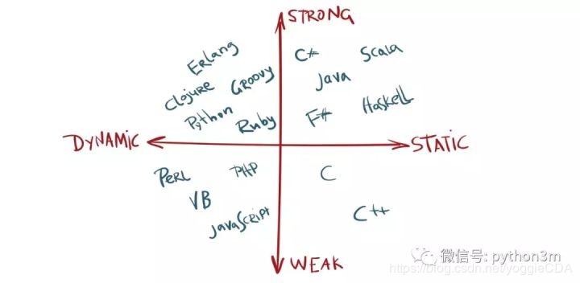

类型检查是一个验证和施加类型约束的过程，编译器或解释器通常在编译或运行阶段做类型检查。例如，你不能拿一个string类型值除以浮点数。
用更简单的术语，类型检查仅仅就是查看变量和它们的类型，然后说这个表达式是合理的。
因此，现在我们知道类型检查是什么，明白这些术语真的很简单。
在静态类型语言(statically typed languages)中，类型检查发生在编译阶段(compile time)，然而，在动态类型语言(dynamically typed languages)中，类型检查发生在运行阶段(run time)
静态类型(static): 所有的变量类型必须被显示地声明，因为这些信息在编译阶段就被需要。例如，在 Java 中
float f = 0.5
1
动态(Dynamic): 显示声明不被要求，因为类型赋值发生在运行阶段。例如在 Python 中，
f = 0.5
1
静态类型(static): 编译阶段做更多处理，但是运行时(run-time)性能更好
动态(Dynamic): 编译阶段更高效，但是运行时的类型检查会影响到性能
静态类型: 运行时出错机会更小，但是提供给程序员的灵活性不好
动态类型: 提供更多的灵活性但是运行时出错机会相对更大
各种语言按照动态/静态，弱类型/强类型的划分：
首先看下什么是强类型，在强类型中，不管在编译时还是运行时，一旦某个类型赋值给某个变量，它会持有这个类型，并且不能同其他类型在计算某个表达式时混合计算。例如在Python中：
data = 5 # 在runtime时，被赋值为整形
data = data + "xiaoming" # error
1
2
然而，在弱类型中，它是很容易与其他类型混合计算的，比如同样一门伟大的语言 Javascript，使用它：
var data = 5
data = data + 'xiaoming' //string和int可以结合
1
2
类型检查确保一个表达式中的变量类型是合法的。在静态类型语言中，类型检查发生在编译阶段；动态类型语言，类型检查发生在运行阶段。
强类型语言有更强的类型检查机制，表达式计算中会做严格的类型检查；而弱类型语言允许各种变量类型间做一些运算。
Python是一门动态的(dynamic)且强类型(strong)语言。